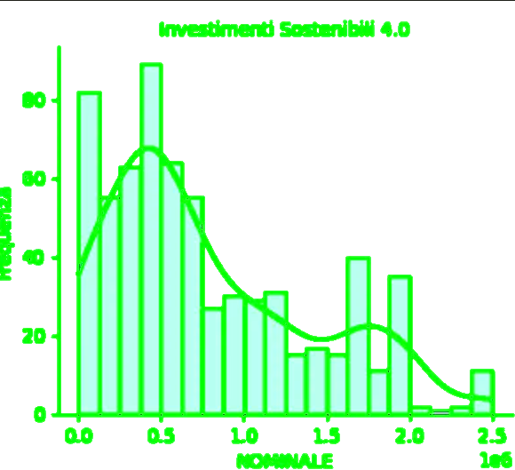
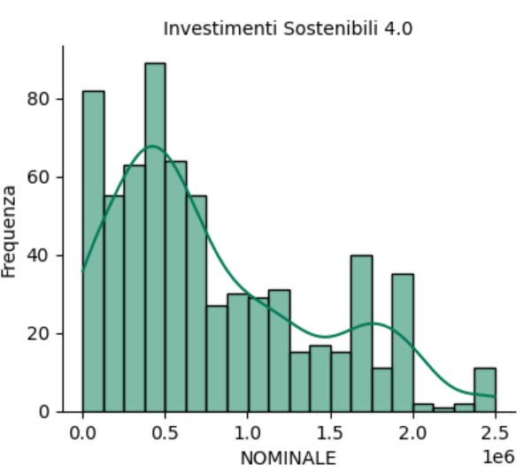
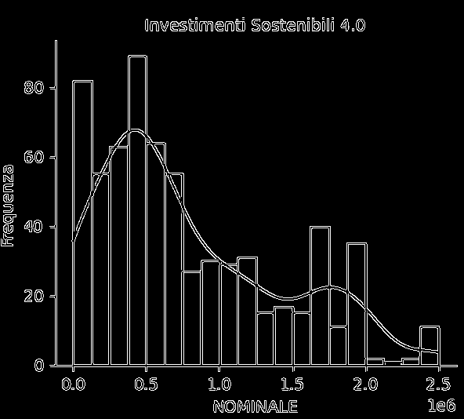
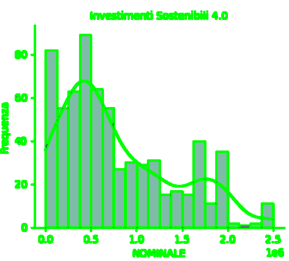
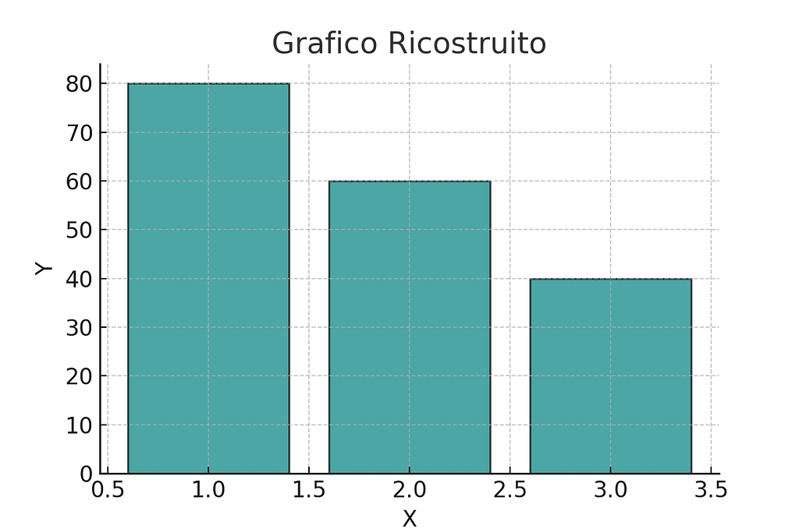

ChatGPT & Reverse Engineering
Paolo Volterra ![]()
Reverse Engineering with AI

“Ehi, umano, mi sai dire quanto potrebbe valere la prima barra di questo grafico?”
Provate a fare la stessa cosa con un #LLM dandogli l’immagine e chiedendogli di rispondere: non ci riuscirà, a meno che…
Lavorare in gruppo
Come risolvere un problema, facilissimo per noi bipedi?
Vi risparmio i tentativi autonomi che ha fatto ChatGPT; per chi è curioso, vi mando il link del thread
La soluzione è: lavorare insieme
Dandogli dei suggerimenti, lui ha applicato technicality, #AI compresa, che mi avrebbero occupato tempo e voglia
Lo studio mi serviva per sperimentare un approccio collaborativo: io suggerivo e lui eseguiva
ChatGPT diventa così uno spaventoso boost per le mie capacità
Contemporaneamente ho visto applicare soluzioni software a cui non avrei pensato o che non conoscevo
Come dire: ho lavorato con un collega molto esperto.
Col vantaggio che non sbuffa, non ha altre priorità, ti capisce anche se dai istruzioni astruse, non polemizza, non si ammala, non va in ferie (un mio autoritratto?!?!!?….)
Il bello è che mi ha fatto il riepilogo dei passaggi con tanto di script formattati in #markdown e immagini; il tutto pronto per la stampa!
Alla fine del lavoro, mi sono sentito in colpa: io ero esausto e lui invece continuava a dare ulteriore disponibilità. Un masochista
Lo ringrazio scrivendo questo articolo
1. Obiettivo
— Estrazione delle altezze delle 15 barre dal grafico.
— Riostruzione del grafico.
— Verifica dell’accuratezza con dati forniti successivamente dal file Excel originario.
Perchè fare tutto questo?
Tutto parte da una constatazione: in un mondo #datadriven le informazioni dovrebbero essere proposte/condivise non solo in modo destrutturato (testo, grafico) ma anche in un formato machine readable.
Un grafico in genere viene visto come un “disegno” e non come una sintesi emotiva di un lavoro complesso sottostante.
Condividere non solo il grafico ma ache il dato facillita un approccio collaborativo e la possibilità di ulteriore astrazione: “Se tu hai una mela, e io ho una mela, e ce le scambiamo, allora tu ed io abbiamo sempre una mela ciascuno. Ma se tu hai un’idea, ed io ho un’idea, e ce le scambiamo, allora abbiamo entrambi due idee.”

Ho costruito l’immagine utilizzando un semplice foglio excel, che alla fine ho dato a ChatGPT per fare le verifiche con quello che aveva ipotizzato
Librerie Python Utilizzate
import cv2
import numpy as np
import matplotlib.pyplot as plt
from pytesseract import pytesseract
import pandas as pd2. Elaborazione dell’immagine
2.1. Edge Detection
Per identificare i contorni delle barre e delle linee:
# Edge Detection
edges_detected = cv2.Canny(gray_original, threshold1=50, threshold2=150)
plt.imshow(edges_detected, cmap='gray')
plt.title("Edge Detection")
plt.axis("off")
plt.show()
2.2. Contours Detection
Ho individuato i contorni delle barre per estrarre posizione, altezza e larghezza:
contours_detected, _ = cv2.findContours(edges_detected, cv2.RETR_TREE, cv2.CHAIN_APPROX_SIMPLE)
image_with_contours = original_image.copy()
cv2.drawContours(image_with_contours, contours_detected, -1, (0, 255, 0), 2)
plt.imshow(cv2.cvtColor(image_with_contours, cv2.COLOR_BGR2RGB))
plt.title("Contours of Detected Bars")
plt.axis("off")
plt.show()
3. Estrazione delle Informazioni dal Grafico
3.1. OCR per Etichette degli Assi
Utilizzo dell’OCR per identificare i valori sugli assi X e Y:
oimage_path = pytesseract.image_to_string(original_image, config=' - psm 6')
# Etichette Asse Y: [80, 60, 40, 20, 0]
# Etichette Asse X: [0.0, 0.5, 1.0, 1.5, 2.0, 2.5]3.2. Normalizzazione delle Coordinate
I contorni delle barre vengono proiettati sugli assi per calcolare altezza e posizione:
def interpolate_y_value(pixel, y_pixels, y_values):
return np.interp(pixel, y_pixels, y_values)
bar_y_values = [interpolate_y_value(top, y_axis_pixel_positions, y_axis_values) for top in bar_tops]Risultato (Tabella Normalizzata)
| Barra | Pixel Top | Valore Y |
| — — — | — — — — — | — — — — |
| 1 | 50 | 80 |
| 2 | 150 | 60 |
| … | … | … |
4. Ricostruzione del Grafico
4.1. Generazione del Grafico Ricostruito
Costruzione di un grafico basato sui dati estratti:
plt.bar(bar_positions, reconstructed_heights, width=(x_bins[1] - x_bins[0]), color='teal', alpha=0.7, edgecolor='black')
plt.title("Grafico Ricostruito")
plt.xlabel("X")
plt.ylabel("Y")
plt.grid(axis='y', linestyle=' - ', alpha=0.7)
plt.show()Risultato

5. Verifica con i Dati Excel
Utilizzo dei valori della colonna “NOMINALE” del cluster “Investimenti Sostenibili 4.0” del file xls per costruire un istogramma:
frequencies_hist, bin_edges_hist = np.histogram(nominale_cluster_data, bins=15)
frequencies_hist_scaled = (frequencies_hist / max(frequencies_hist)) * 80Tabella delle Frequenze (Scalate)
| Intervallo | Frequenza |
| — — — — — — | — — — — — -|
| 0–10000 | 56.55 |
| 10000–20000| 62.76 |
| … | … |
5.2. Confronto tra Grafico e Excel
Confronto dei valori delle barre ricostruite con quelli calcolati dai dati Excel:
absolute_errors = [abs(original - adjusted) for original, adjusted in zip(original_graph_y_values, final_15_heights_adjusted)]
percentage_errors = [(abs(original - adjusted) / original) * 100 if original != 0 else 0 for original, adjusted in zip(original_graph_y_values, final_15_heights_adjusted)]Tabella degli Errori
| Barra | Originale | Calcolato | Errore Assoluto | Errore Percentuale |
| — — — -| — — — — — -| — — — — — -| — — — — — — — — -| — — — — — — — — — — |
| 1 | 56 | 56.55 | 0.55 | 0.99% |
| 2 | 60 | 62.76 | 2.76 | 4.60% |
| … | … | … | … | … |
5.3. Errore Totale
- Errore Assoluto Totale: 12.79
- Errore Percentuale Totale: 2.81%
6. Conclusione
Il processo ha dimostrato un alto grado di accuratezza:
- Errore Percentuale Totale: 2.81% indica un risultato molto vicino ai dati originali.
- La combinazione di OCR, rilevamento contorni e normalizzazione ha permesso di ricostruire fedelmente i dati del grafico.
Affidabilità
- Punti di Forza: Il metodo è stato verificato sia visivamente sia con i dati Excel.
- Limitazioni: La qualità dell’immagine e la precisione dell’OCR potrebbero influire sui risultati.
Con ulteriori miglioramenti, il metodo può essere applicato a grafici complessi o a immagini con qualità variabile.
Metti like se ti è piaciuta questa condivisione!
Pubblicato in origine su Medium il 14 dicembre 2024.
Vedi anche
- La nascita dell’uso dell’intelligenza artificiale in banca: dietro le quinteCome è stato costruito evidence_merged.json Nota metodologica sul processo di retrieval e costruzione dell’evidence pack per LLM
- Agents.md aiuto oppure ostacolo?La ricerca analizza l’efficacia dei file di contesto come AGENTS.md, strumenti teoricamente progettati per guidare gli agenti di programmazione AI all’interno dei repository software.
- Platone e l’intelligenza artificialeConoscenza, rappresentazione della realtà, apprendimento e verità